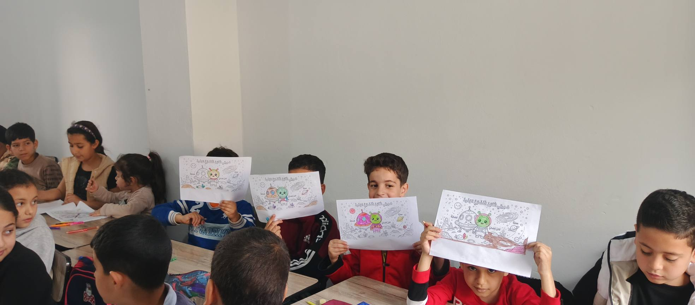

لحظاتناNos moments
معرض الصورGalerie Photos




الجمعية الثقافية — ولاية تيزي وزوAssociation Culturelle — Wilaya de Tizi-Ouzou
الجمعية الثقافية لولاية تيزي وزو "آفاق جرجرة" هي جمعية ولائية ذات طابع ثقافي تعنى بالقضايا الثقافية تأسست سنة 2010، شعارها "من أجل تنمية شاملة". تنشط في مجال الثقافة العلمية والفنية، وتنمية قدرات الشباب والأطفال من خلال شبكة من النوادي المتخصصة. L'Association Culturelle de la Wilaya de Tizi-Ouzou "Horizons de Djurdjura" est une association bénévole à but non lucratif fondée en 2010, avec comme devise "Pour un développement global". Elle œuvre dans le domaine de la culture scientifique et artistique, et le développement des capacités des jeunes et des enfants à travers un réseau de clubs spécialisés.
تؤمن الجمعية بأن التنمية الحقيقية تبدأ من الإنسان — من تنمية فضوله المعرفي، إبداعه الفني، وانتمائه لمحيطه الطبيعي والثقافي. L'association croit que le vrai développement commence par l'être humain — en cultivant sa curiosité intellectuelle, sa créativité artistique et son appartenance à son environnement naturel et culturel au cœur de la région de Djurdjura.
معترف بها وطنياً من طرف وزارة الشباب، وحائزة على تكريم رسمي سنة 2025 تقديراً لمساهماتها في إثراء الحركة الجمعوية الشبابية بولاية تيزي وزو. Reconnue au niveau national par le Ministère de la Jeunesse et lauréate d'une distinction officielle en 2025, en reconnaissance de ses contributions à l'enrichissement du mouvement associatif jeunesse de la Wilaya de Tizi-Ouzou.
تمتلك جمعية آفاق جرجرة شبكة من النوادي المتخصصة التي تستهدف الشباب من مختلف الاهتمامات والمواهب L'association Horizons de Djurdjura dispose d'un réseau de clubs spécialisés ciblant les jeunes aux intérêts et talents variés
ينظم جلسات رصد ليلية، ورشات علمية تطبيقية، وسهرات فلكية على جبال جرجرة. يمتلك تلسكوبين Bresser 130/650 EQ ومعدات رصد متطورة. معترف به على المستوى الوطني. Le seul club d'astronomie actif de la Wilaya de Tizi-Ouzou. Organise des sessions d'observation nocturne, des ateliers scientifiques, et des soirées astronomiques sur les montagnes de Djurdjura. Dispose de deux télescopes Bresser 130/650 EQ.
ورشات مسرح العرائس، التمثيل، والفنون الأدائية. يستهدف الأطفال والشباب لتنمية مهارات التعبير والإبداع.Ateliers de théâtre de marionnettes, jeu d'acteur et arts de la scène. Cible les enfants et les jeunes pour développer l'expression et la créativité.
فن وإبداعArt & Créationتكوين الشباب في التصوير الفوتوغرافي، إنتاج الفيديو، والمونتاج. صناعة المحتوى الهادف والتوثيق الإعلامي.Formation des jeunes en photographie, production vidéo et montage. Création de contenu pertinent et documentation médiatique.
إعلام رقميMédias numériquesاستكشاف عالم الأسماك والأحياء المائية. تنمية الوعي البيئي والاهتمام بالطبيعة لدى الشباب.Exploration du monde aquatique et des poissons. Développement de la conscience environnementale et de l'amour de la nature.
طبيعة وبيئةNature & Environnementجمع وتصنيف الطوابع البريدية، الأحجار النادرة، والعملات من مختلف دول العالم. تنمية روح البحث والاكتشاف.Collection et classification de timbres, pierres rares et monnaies du monde entier. Développement de l'esprit de recherche et de découverte.
تراث وتجميعPatrimoine & Collection

من أجل تنمية شاملة — Pour un développement globalPour un développement global — من أجل تنمية شاملة